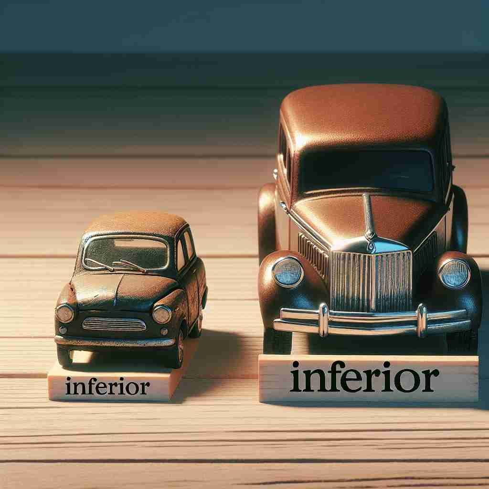

💬 The smaller car has an inferior quality compared to the larger one.

💬 The red apple is an inferior quality apple compared to the green one.
🔈 [ɪn'fɪərɪə]
🗝️ adj. lower in rank, status, or quality
🖼️ 在一个大型公司会议室里，一位经理正在向团队介绍新员工。他提到，新员工目前的职位比其他员工的级别低，但他有潜力快速晋升。这个场景体现了 'inferior' 作为职位、地位或质量较低的含义。
🔍 想象一个位于底部的物体，它在位置、质量和重要性上都处于'低'的状态。这个核心概念贯穿了'inferior'的各种用法，无论是描述实际位置、社会地位、品质还是自我感受，都围绕着'低'这个中心意义。通过联想这个处于底部或低位的形象，可以更容易理解和记忆'inferior'的多重含义。
💬 The smaller car has an inferior quality compared to the larger one.
💬 The red apple is an inferior quality apple compared to the green one.
🌳 由拉丁词根 "infer-"，意为 "下" 或 "低"，加上形容词后缀 "-ior" 构成。整个单词表示 "低于他人，较差"。
💡 可以将 "inferior" 联想为 "in" + "far below"，意指在某物之下或距离较远的位置，这样能帮助记住 "低于他人" 的意思。
🗝️ adj. situated lower down
🖼️ 在一座风景如画的山上，徒步旅行者到达了一个美丽的观景点。远远向下看去，可以看到一片小村庄，坐落在山脚，地势较低，呈现出 'inferior' 作为位置较低的含义。
💬 The inferior vena cava is located in the lower part of the body.
❓ 从地位低延伸到位置低
🗝️ n. of low or lower degree or rank
🖼️ 在一个古代王国的情景中，一位骑士被授予了一种较低级别的称号，他站在其他高阶骑士的旁边，体现了 'inferior' 作为等级或职位较低的含义。
💬 He treats his employees as inferiors.
❓ 从形容词表示低等转化为名词，指代低等的人或物
🗝️ adj. expressing a low opinion of oneself
🖼️ 在一个学校的心理咨询室里，一名学生对着咨询师坦诚自己总觉得不如别的同学，常常贬低自己。这个场景反映了 'inferior' 作为自我评价低的含义。
💬 She often felt inferior when comparing herself to her successful siblings.
❓ 从外在的低等延伸到内在的自我评价低
🗝️ adj. of less importance or value
🖼️ 在一个忙碌的市场中，一位顾客正在挑选水果。他仔细比较两种苹果，认为其中一种因外观较差而显得不那么重要或有价值。这一场景展示了 'inferior' 作为较不重要或价值低的含义。
💬 This is an inferior consideration that should not affect our main decision.
❓ 从地位低延伸到重要性或价值低